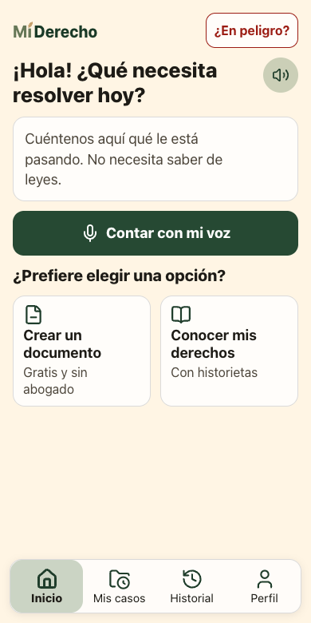

Derecho de petición
Para pedirle algo a la alcaldía, la EPS o cualquier entidad.
Le responden en 15 días hábiles
Ley 1755 de 2015
MiDerecho · gratis, para el campo colombiano
Desde el celular, MiDerecho le ayuda a escribir la petición, la tutela o el reclamo, lo envía a la entidad y le avisa cuándo le tienen que responder.
Jueces, personeros e inspectores atienden en la cabecera municipal, a horas de camino. Quien no puede ir, no reclama.
77%
de los 8,2 millones de problemas legales de los colombianos quedó sin resolver.
Encuesta de Necesidades Jurídicas 2020 (DANE, DNP y MinJusticia)
432.658
tutelas en 2025 fueron por un derecho de petición. Es el derecho que más se reclama ante los jueces: entre el 45% y el 48% de las tutelas desde 2013.
Consejo Superior de la Judicatura (2026); Defensoría del Pueblo; Corte Constitucional
93%
de las personas rurales usa el celular para llamar. Solo el 64% lo usa para mandar mensajes.
DANE, ENTIC Hogares 2024
55%
de las personas en municipios PDET tuvo un problema legal serio en 4 años. La mitad no lo resolvió.
HiiL y USAID, encuesta en 16 municipios, 2023
El búho de MiDerecho acompaña cada paso, en el celular y con palabras sencillas.
Su casa, en la vereda
Paso 1
Escriba o hable, con sus propias palabras. No necesita saber de leyes.
En la app: «Contar con mi voz»
Paso 2
El asistente le explica qué derecho está en juego, qué puede hacer y a dónde acudir. Lo que dice la ley sale de textos fijos, no de lo que invente la inteligencia artificial.
En prueba: la IA es Gemini en su plan gratuito. Si falla, sigue un modo básico sin IA.
Paso 3
Derecho de petición, tutela o reclamo de servicios públicos, con preguntas cortas. Se arma sin internet, y su nombre y su cédula van solo en el papel.
En la app: «Crear un documento»
Paso 4
La app manda el documento por correo a la alcaldía, la EPS o el juzgado, y le deja la constancia de envío. Si prefiere, lo imprime y lo entrega usted.
En prueba: por ahora el correo solo sale a direcciones de prueba.
Paso 5
Cuenta los días hábiles, con festivos, y le avisa antes de que se venzan: notificación en el celular, SMS, WhatsApp o una llamada.
En prueba: los avisos todavía se simulan; no llegan de verdad.
Paso 6
La app arma la tutela. Si el juez la niega, la impugnación. Si la entidad no cumple, el desacato. En 2025, el 73% de las tutelas por petición terminó con respuesta u orden a favor de la persona.
En la app: «Mis casos»
El papel hizo el viaje.
Usted no.

Señal que va y viene, celulares compartidos y poca costumbre de escribir: la app parte de ahí.
«Conozca sus derechos» y «Crear un documento» funcionan sin señal. La app se guarda en el celular la primera vez.
Dicte su caso y escuche en voz alta cada respuesta y cada historieta. Sirve a quien lee poco o ve poco.
La presidenta de la Junta de Acción Comunal abre la app con su vecino al lado. El vecino decide y firma; ella no guarda listas.
Así se usa hoy. El kit para líderes está en diseño.
La app entera pesa menos de 1 MB (unos 845 KB) y después casi no gasta datos.
En el campo un celular lo usan varios, y contar un problema puede ser peligroso. Por eso la app guarda lo mínimo.
Lo que usted escribe
La EPS no me da la cita con el cardiólogo hace dos meses, mi cédula es 1.144.555.666
Lo que le llega a la IA
La EPS no me da la cita con el cardiólogo hace dos meses, mi cédula es [número]
Sus casos y su historial quedan cifrados en el celular, por si alguien más lo usa. Con «Borrar todo» no queda nada.
PBKDF2 + AES-GCM
Se piden solo al crear el documento y van impresos en el papel. No pasan por la IA ni quedan en el celular.
Si aparece una amenaza o un grupo armado, la app deja de preguntar, no guarda nada y muestra a dónde acudir: línea 123, Personería o Defensoría del Pueblo.
Doña Rosa pregunta y el asistente responde, en 13 viñetas que también se escuchan. Es Legal Design: entender antes de aceptar.
Doña Rosa: ¿Y quién va a ver lo que yo escriba?
Asistente: Soy una máquina, no una persona.
Borrador: falta validarla con un abogado y nombrar al responsable de los datos.
Cada documento lleva al siguiente, y la app sabe cuándo vence cada paso.
Para pedirle algo a la alcaldía, la EPS o cualquier entidad.
Le responden en 15 días hábiles
Ley 1755 de 2015
¿No le respondieron?
Para que un juez proteja su derecho: la respuesta a su petición, la salud u otro derecho fundamental. En salud urgente, el juez puede ordenar una medida de inmediato.
El juez decide en 10 días
Decreto 2591 de 1991
¿El juez la negó?
Para que otro juez revise el fallo.
3 días después de la notificación
Decreto 2591 de 1991, art. 31
¿Ganó y no cumplen?
Para que el juez obligue y sancione a quien no cumple el fallo.
Decreto 2591 de 1991, art. 52
Aparte: el agua, la luz o el gas
Para cobros injustos, cortes o daños. Si la empresa no responde en 15 días hábiles, gana usted. Si lo niega, tiene 5 días hábiles para el recurso.
Ley 142 de 1994, arts. 154 y 158
Video próximamente: la app, paso a paso, con el búho.
$0le cuesta a la familia que la usa
La Ley 2430 de 2024 obliga al Estado a llevar la justicia al campo «procurando el uso de las TIC».
Costo por municipio, al año
Licencia de la appCOP 15 M
Red de 12 promotoresCOP 14 M
TotalCOP 29 M
Unos COP 55.000 a 62.000 por caso. Una consulta privada cuesta COP 85.000. Cifras estimadas, por validar.
En el mundo, lo que funciona no es un robot solo: es una persona de confianza con una buena herramienta, como Tele-Law en India o los paralegales de Namati en África. Aquí, esa persona ya existe: la presidenta de la Junta de Acción Comunal, el conciliador en equidad. Hay 63.833 Juntas en el país.
Kit para líderes en diseño
Capacitar no es activar. Por eso el promotor recibe un certificado con la Personería o una universidad y COP 10.000 por caso cerrado.
Cuidamos al líder: la marca es colectiva («Promotores de Derechos de la vereda»), su rostro es opcional y la app no guarda listas de vecinos. Indepaz registra 1.978 líderes sociales asesinados desde 2016.
Piloto propuesto: Montes de María, Sur del Tolima o Macarena-Guaviare.
Funciona en cualquier celular con navegador. No necesita cuenta ni instalar nada.
Abrir MiDerechomiderecho-two.vercel.app
[Nombre y apellido]
[Rol]
[Nombre y apellido]
[Rol]
[Nombre y apellido]
[Rol]
[Nombre y apellido]
[Rol]